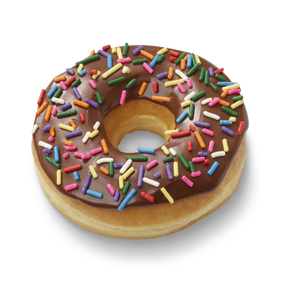

No solo donitas
Son Dunkin Donuts
Dunkin' Donuts llegó a Chile en 1997, cuando se inauguró el primer local en El Bosque Norte, comuna de Las Condes. Desde entonces, la empresa ha tenido un crecimiento progresivo, alcanzando cada vez más regiones a lo largo del territorio nacional.
Saber más
